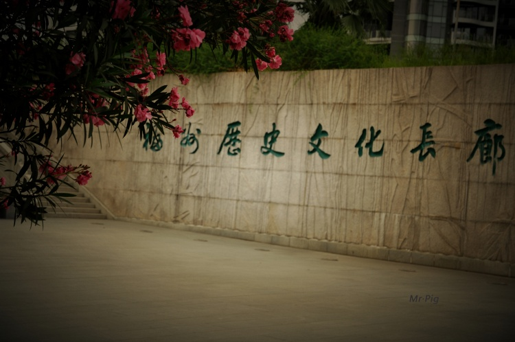
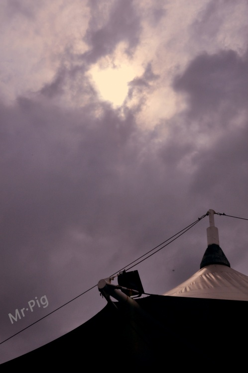
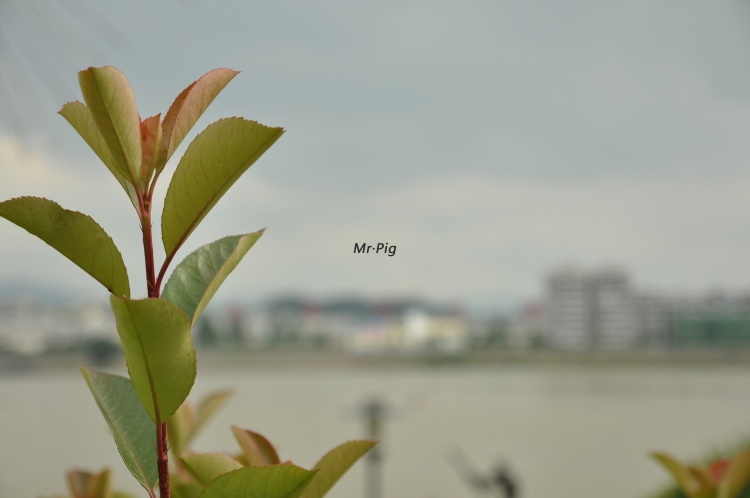
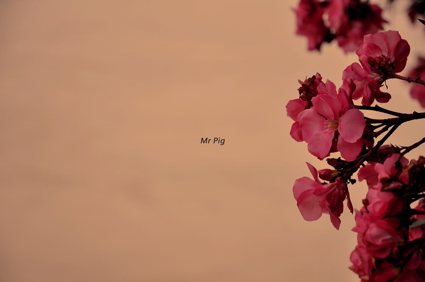
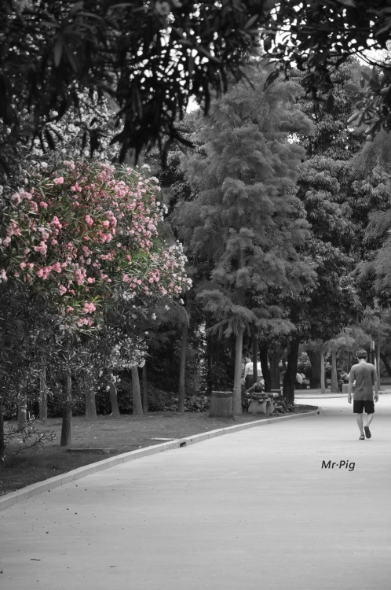

相机：尼康D90
镜头：尼康 16-85 F3.5-5.6G VR
拍摄地点：福州市江滨公园
作者：猪先生
来源：网易摄影空间http://photo.163.com/level10/home/





这次能看到了叭~~~~~~~~~~~~~~~~~~~~~~~
［ 被感动的人 于 2011-8-1 21:19:04 时花20金币送鲜花一朵］
［ 梧桐风 于 2011-8-1 21:26:43 时花20金币送鲜花一朵］
［ 梧桐风 于 2011-8-1 21:27:12 时花20金币送鲜花一朵］
［ 梧桐风 于 2011-8-1 21:27:15 时花20金币送鲜花一朵］
［ 梧桐风 于 2011-8-1 21:30:52 时花20金币送鲜花一朵］
［ 梧桐风 于 2011-8-1 21:31:45 时花20金币送鲜花一朵］
［ 梧桐风 于 2011-8-1 21:31:56 时花20金币送鲜花一朵］
引用：
原文由 隐藏菜系 发表于 2011-8-1 21:27:42 :
美！！但为啥不是 Ms.pig
这是我老公拍的。 我俩五月六号分手。前两天刚和好~~~~~~~~~~~~~~
我俩五月六号分手。前两天刚和好~~~~~~~~~~~~~~
引用：haha~.祝福祝福~
原文由 猪小姐 发表于 2011-8-1 21:29:23 :引用：
原文由 隐藏菜系 发表于 2011-8-1 21:27:42 :
美！！但为啥不是 Ms.pig这是我老公拍的。
引用：
原文由 隐藏菜系 发表于 2011-8-1 21:30:02 :引用：haha~.祝福祝福~
原文由 猪小姐 发表于 2011-8-1 21:29:23 :引用：
原文由 隐藏菜系 发表于 2011-8-1 21:27:42 :
美！！但为啥不是 Ms.pig这是我老公拍的。
 谢谢~~~~~~~~~~~
谢谢~~~~~~~~~~~